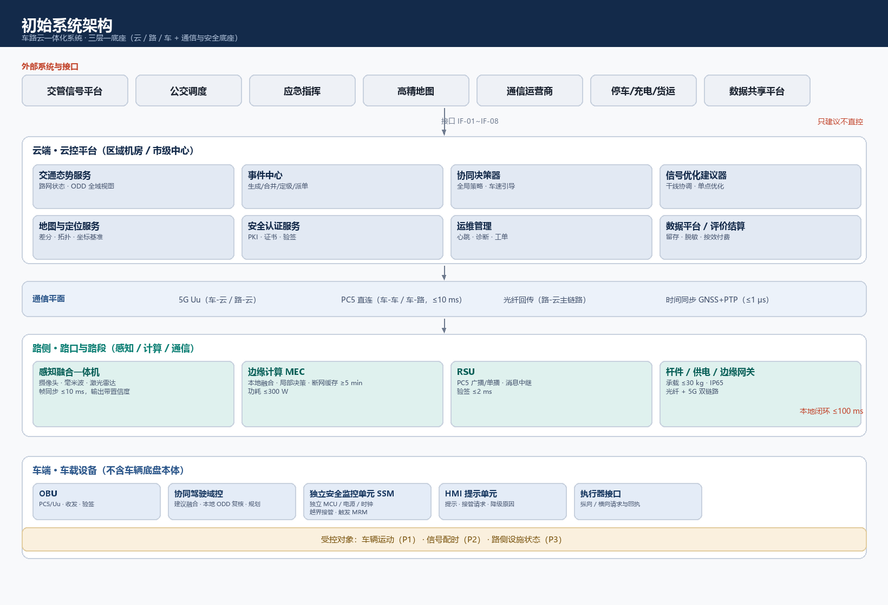
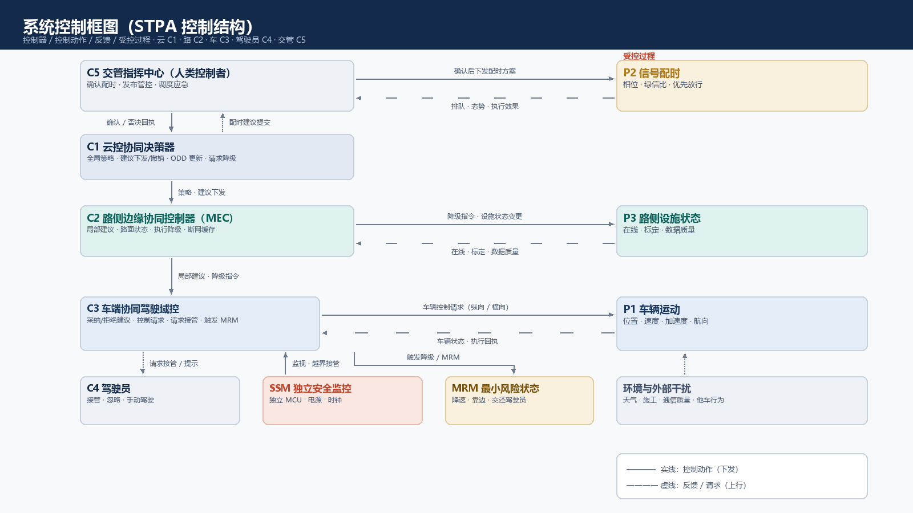
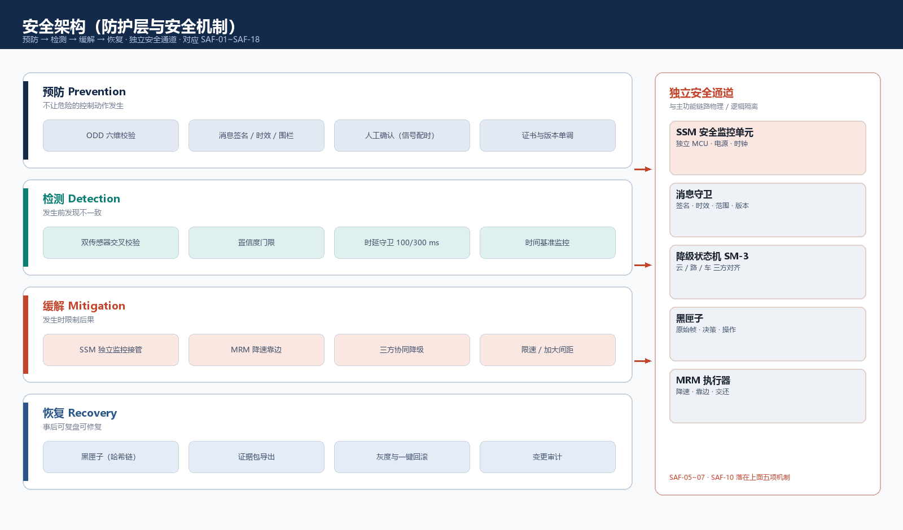

文档编号：CSE-2026-SARCH-001 版本：V1.0 日期：2026-11-24
上游文档：BRS V1.0、StRS V1.0、SyRS V1.0（CSE-2026-SyRS-001）
方法：ISO 15288 架构定义过程；STPA（系统理论过程分析，Leveson 方法）；ISO 26262 / ISO 21448 作为安全论证背景。
1 初始系统架构
1.1 架构视角
初始架构采用"三层一底座"的组织方式，与 StRS 的系统层定位一致：车路云一体化系统是一个由车端、路端、云端三类子系统集成而成的、可独立交付与验收的系统，而不是单一硬件或单一算法。
| 视角 | 关注点 | 本文件对应章节 |
|---|
| 逻辑视图 | 功能如何分配到组件 | 1.2–1.5 |
| 接口视图 | 组件之间交换什么 | 1.8、SyRS 3.4 |
| 部署视图 | 组件落在哪里 | 1.6 |
| 决策视图 | 为什么这样分 | 1.7 |
| 控制视图 | 谁控制谁、依据什么反馈 | 2、3 |
1.2 云控平台（云端子系统）
| 组件 | 职责 | 关键接口 | 备注 |
|---|
| 交通态势服务 | 路网状态、流量、拥堵、ODD 全域视图 | 汇聚 MEC 上传 | 一张图数据源 |
| 事件中心 | 事件生成、合并、定级、派单、闭环 | 交管/应急/公交 | 误报率 ≤ 5% |
| 协同决策器 | 全局协同策略、车速引导、优先通行建议 | 下发 MEC/RSU | 只出建议，不直控 |
| 信号优化建议器 | 干线协调、单点优化方案生成 | 交管信号平台 | 须人工确认 |
| 地图与定位服务 | 高精地图差分、路网拓扑、坐标基准 | 地图商订阅 | 版本可追溯 |
| 安全认证服务 | 证书签发/轮换/吊销、验签策略 | 车、路、云三方 | PKI/CA |
| 运维管理 | 设备心跳、诊断、工单、远程重启 | 路侧设备 | 三级运维 |
| 数据平台 | 留存、脱敏、共享、审计 | 数据共享平台 | 留存 ≥ 180 天 |
| 评价与结算 | 指标计算、报告、按效付费依据 | 财政/审计 | 可被第三方复算 |
1.3 路侧子系统
| 组件 | 职责 | 关键约束 |
|---|
| 感知融合一体机 | 摄像头/毫米波/激光雷达融合，输出目标列表 | 帧同步 ≤ 10 ms；遮挡场景须标置信度 |
| 边缘计算 MEC | 本地融合、局部决策、断网缓存、降级执行 | 断网缓存 ≥ 5 min；功耗 ≤ 300 W |
| RSU | PC5 广播/单播、消息中继 | 空口 ≤ 10 ms；验签 ≤ 2 ms |
| 杆件与供电 | 承载、取电、防雷接地 | 新增载荷 ≤ 30 kg；防护 ≥ IP65 |
| 边缘网关 | 与云端的加密回传、协议转换 | 双链路（光纤 + 5G 备份） |
1.4 车端子系统
| 组件 | 职责 | 关键约束 |
|---|
| OBU | PC5/Uu 通信、消息收发与验签 | 验签 ≤ 2 ms；证书有效期校验 |
| 协同驾驶域控 | 建议融合、本地 ODD 复核、决策与规划 | 端到端本地闭环 ≤ 100 ms |
| 独立安全监控单元 | 监视域控输出、越界接管、触发 MRM | 独立供电与独立时钟；失效导向安全 |
| HMI 提示单元 | 提示、接管请求、降级原因 | ≤ 5 条/行程；不遮挡导航 |
| 执行器接口 | 纵向/横向控制的请求与回执 | 只接受通过校验的请求 |
1.5 通信与安全底座
- 通信平面：PC5（车-车、车-路直连，低时延）、5G Uu（车-云、路-云）、光纤（路-云主链路）。
- 时间平面：GNSS + PTP 混合授时，全域 ≤ 1 μs；失步即降级（SAF-11）。
- 安全平面：证书体系、消息签名、双向认证、访问控制（角色—区域—用途三维）、审计。
1.6 部署视图
- 试点期：3 个行政区的高事故/高拥堵路口，单区 20–40 个路口，区域机房部署云控平台边缘节点；
- 成长期：沿主干路成线，路口标准包复用，云端集中扩容；
- 全域期：多区域中心 + 市级中心两级部署，数据分级汇聚。
1.7 关键架构决策（ADR）
| 编号 | 决策 | 备选方案 | 取舍理由 |
|---|
| ADR-01 | 云控只出建议、不直控车辆与信号 | 云端直控 | 责任边界与法规（BR-09）；通信中断时不会失控 |
| ADR-02 | 车端保留本地 ODD 复核与安全监控 | 完全信任云端 | 端到端时延不可控；安全需要独立通道 |
| ADR-03 | 路侧 MEC 承担断网自治 | 全部依赖云 | 5G 中断场景必须可降级运行（MR-08） |
| ADR-04 | 建议消息带签发者、时间窗、地理范围 | 仅带内容 | 防重放、防过期、防越界生效 |
| ADR-05 | 安全监控单元独立于域控（独立 MCU/电源/时钟） | 同芯片分区 | 共因失效；ASIL B 分解需要独立性 |
| ADR-06 | 信号优化一律经交管确认 | 自动下发 | 执法与配时责任在交管（SR-05） |
1.8 接口视图
接口清单见 SyRS 3.4（SY-I-01~SY-I-15）。架构上按"三类边界"划分：系统边界（对外 8 个外部接口）、子系统边界（车-路-云内部 5 个）、组件边界（域控-HMI、MEC-RSU 等）。

图 1 初始系统架构（点击查看原图）
2 系统控制框图
2.1 控制结构
STPA 要求先画控制结构（不是数据流图）。本系统的控制层级为：
- 组织层：交管指挥中心（人类控制者，C5）——对路口管控与应急处置有最终决定权；
- 云端：协同决策器（C1）——对全域协同策略与建议负责；
- 路侧：边缘协同控制器（C2）——对局部路口/路段的安全与降级负责；
- 车端：协同驾驶域控（C3）——对建议的采纳、执行与接管负责；驾驶员（C4）是最终控制者；
- 受控过程：车辆运动（P1）、信号配时（P2）、路侧设施状态（P3）。
2.2 控制动作与反馈
| 控制器 | 控制动作（CA） | 反馈 | 受控过程 |
|---|
| C1 云控 | 下发全局策略；下发/撤销协同建议；更新 ODD；请求降级 | 路段状态、执行回执、事件闭环状态 | P1、P3 |
| C2 MEC | 下发局部建议；广播路面状态；执行降级；请求接管 | 目标列表、RSU 在线状态、车辆响应 | P1、P3 |
| C3 车端域控 | 采纳/拒绝建议；输出纵向/横向请求；请求接管；进入 MRM | 车辆状态、驾驶员状态、执行器回执 | P1 |
| C4 驾驶员 | 接管；忽略提示；手动驾驶 | HMI 提示、车辆行为 | P1 |
| C5 交管 | 确认/否决配时方案；发布管控；调度应急 | 路口排队、事件态势 | P2 |
2.3 控制环时延预算
| 环 | 组成 | 预算 |
|---|
| 车-路本地环 | 感知 30 + 融合 20 + 决策 20 + 执行 20 + 余量 10 | ≤ 100 ms |
| 车-路-云环 | 路侧融合 15 + 上行 40 + 云端决策 80 + 下行 30 + 车端执行 30 + 余量 105 | ≤ 300 ms |
| 人机交接环 | 检测到需接管 → 提示 ≤ 2 s 前 → 驾驶员响应 | ≥ 2 s 提前量 |
| 事件处置环 | 事件发生 → 告警 ≤ 30 s → 确认 → 派单 | ≤ 30 s（告警段） |

图 2 系统控制框图（点击查看原图）
3 系统理论过程分析（STPA）
3.1 分析范围与假设
分析对象为 SyRS 定义的 SOI（车路云一体化系统），边界到执行器接口为止；假设驾驶员具备合法驾驶资格且会响应接管请求；假设交管平台按流程人工确认。
3.2 损失（Losses）
| 编号 | 损失描述 |
|---|
| L-1 | 人员伤亡（驾驶员、乘客、骑行者、行人、施工人员） |
| L-2 | 财产损失（车辆、路侧设施、道路资产） |
| L-3 | 交通服务中断或大面积拥堵（含应急通道被阻断） |
| L-4 | 公众信任与隐私损失（误报、滥用、数据泄露） |
| L-5 | 合规与责任风险（违规采集、越权控制、证据缺失） |
3.3 危险（Hazards）与安全约束
| 编号 | 危险 | 关联损失 | 安全约束（初步） |
|---|
| H-1 | 协同建议导致车辆间冲突（追尾、侧碰、抢行） | L-1、L-2 | 建议须在 ODD 内、带时间窗、可校验 |
| H-2 | 错误的优先/配时建议导致路口冲突 | L-1、L-2、L-3 | 只建议不直控；人工确认；冲突检测 |
| H-3 | ODD 越界未及时降级，车辆仍按协同策略行驶 | L-1、L-3 | 越界 ≤ 1 s 识别并进入 MRM |
| H-4 | 虚假或延迟告警导致应急资源错配 | L-3 | 告警带置信度与证据；低置信不直接调度 |
| H-5 | 单点失效导致整网停摆或错误继续输出 | L-3、L-1 | 分区自治、失效导向安全、500 ms 停止输出 |
| H-6 | 数据/证书被篡改导致错误决策 | L-1、L-4、L-5 | 双向认证、验签、审计、版本单调 |
3.4 控制结构
控制结构见第 2 章与图 2。分析以 C1（云控）、C2（MEC）、C3（车端域控）、C5（交管）四个控制器为核心，C4（驾驶员）作为最终控制者与兜底。
3.5 不安全控制动作（UCA）
| 编号 | 控制器 | 控制动作 | UCA 类型 | 危险情境 | 后果 |
|---|
| UCA-01 | C1 | 下发协同建议 | 提供了不该提供的 | ODD 不满足（暴雨、施工、地图过期）仍下发 | H-1、H-3 |
| UCA-02 | C1 | 下发协同建议 | 提供了错误的 | 目标融合错误/时钟失步，建议基于过期态势 | H-1 |
| UCA-03 | C1 | 下发协同建议 | 过晚提供 | 决策与下发超过时延预算，建议到达时已无意义 | H-1 |
| UCA-04 | C1 | 撤销建议 | 过早停止 | 车辆尚未通过冲突点即撤销，驾驶员误判 | H-1 |
| UCA-05 | C1 | 更新 ODD | 提供了错误的 | 施工信息未及时同步，ODD 仍标为满足 | H-3 |
| UCA-06 | C2 | 下发局部建议 | 提供了不该提供的 | 路侧设备故障/标定漂移仍继续输出 | H-1、H-5 |
| UCA-07 | C2 | 执行降级 | 未提供 | 检测到失效但未降级，系统"看起来正常" | H-3、H-5 |
| UCA-08 | C2 | 广播路面状态 | 提供了错误的 | 感知误检（井盖、阴影）被当作障碍物广播 | H-1、H-4 |
| UCA-09 | C3 | 采纳建议并输出控制请求 | 提供了不该提供的 | 建议未通过校验（签名/时效/地理范围）仍执行 | H-1 |
| UCA-10 | C3 | 请求接管 | 过晚提供 | 只在系统已无法处理时才提示，接管余量不足 | H-3 |
| UCA-11 | C3 | 进入 MRM | 未提供 | 降级后未进入最小风险状态，车辆停在冲突区 | H-1、H-3 |
| UCA-12 | C5 | 确认配时/优先方案 | 提供了错误的 | 未核对现场态势即确认，绿波与应急路径冲突 | H-2 |
| UCA-13 | C5 | 发布管控 | 过晚提供 | 重大活动管控发布滞后，路网已饱和 | H-3、H-4 |
| UCA-14 | C4 | 接管 | 未提供 | 驾驶员未响应接管请求（分心、失能） | H-1、H-3 |
3.6 因果场景（Causal Scenarios）
| 编号 | 关联 UCA | 因果因素 | 说明 |
|---|
| CS-01 | UCA-01、UCA-05 | 外部信息滞后（施工、天气）未进入 ODD 判定 | 数据源与判定逻辑之间缺少强制校验 |
| CS-02 | UCA-02、UCA-11 | 时间基准失步（GNSS 丢失、PTP 异常） | 融合与决策使用不同时间基准 |
| CS-03 | UCA-03 | 网络拥塞、云端排队、重试放大 | 缺少端到端时延预算与超时丢弃 |
| CS-04 | UCA-04 | 状态机缺陷：撤销与车辆位置未联动 | 撤销条件只看时间，不看位置 |
| CS-05 | UCA-06 | 传感器标定漂移、遮挡、逆光 | 置信度未参与输出决策 |
| CS-06 | UCA-07 | 失效检测覆盖不足（只检测心跳，不检测数据质量） | 监控指标不完整 |
| CS-07 | UCA-09 | 车端校验缺失或校验逻辑与云端版本不一致 | 版本兼容与灰度策略缺失 |
| CS-08 | UCA-10、UCA-14 | 人机交接设计不足（提示不显著、提前量不足） | 接管请求优先级低、无分级告警 |
| CS-09 | UCA-12、UCA-13 | 人为因素：值班疲劳、界面信息过载、权限过大 | 缺少双人复核与强制核对项 |
| CS-10 | UCA-08、UCA-11 | 算法边界场景（异形物、夜间、雨雾）未覆盖 | 场景库不足，缺少 OOD 检测 |
3.7 安全约束（SC）
| 编号 | 安全约束 | 来源 |
|---|
| SC-01 | 任何对外建议必须通过 ODD 校验、时效校验、地理范围校验 | UCA-01、UCA-03 |
| SC-02 | 系统必须使用统一时间基准，失步即降级 | UCA-02、UCA-11 |
| SC-03 | 撤销条件必须同时满足时间与位置条件 | UCA-04 |
| SC-04 | 感知输出必须带置信度，低置信不得触发强提示 | UCA-06、UCA-08 |
| SC-05 | 失效检测必须覆盖"数据质量"而不只是"设备在线" | UCA-07 |
| SC-06 | 车端必须独立校验建议，校验失败即丢弃并提示 | UCA-09 |
| SC-07 | 接管请求必须分级、提前 ≥ 2 s、可升级为强制提示 | UCA-10、UCA-14 |
| SC-08 | 信号相关操作必须人工确认并双人复核（重大活动） | UCA-12、UCA-13 |
| SC-09 | 不可信状态下 500 ms 内停止对外建议并进入 MRM | UCA-11、UCA-07 |
| SC-10 | 场景库必须覆盖 OOD 检测，未知场景按最保守策略处理 | UCA-08 |
4 安全需求（SAF）
安全需求由 SC 与 UCA 推导，编号 SAF-01~SAF-18，与 SyRS 3.9 的 SY-SAF 对应。
| 编号 | 安全需求 | 完整性目标 | 验证方法 | 追溯 |
|---|
| SAF-01 | 系统在下发任何协同建议前，必须完成 ODD 六维校验，任一维不满足即拒绝下发 | ASIL B | 场景注入 | SC-01、UCA-01 |
| SAF-02 | 每条建议必须携带签发者、签发时间、有效期、地理范围、场景标识与签名；缺一即丢弃 | ASIL B | 故障注入 | SC-01、UCA-09 |
| SAF-03 | 建议剩余有效期 < 500 ms 时必须丢弃；系统不得重放历史建议 | ASIL B | 时延注入 | SC-01、UCA-03 |
| SAF-04 | 信号配时与优先方案只能以"建议"形式提交交管平台，由人工确认后生效 | ASIL B | 接口审查 | SC-08、UCA-12 |
| SAF-05 | 车端必须部署独立安全监控单元，监视域控输出，越界即接管并进入 MRM | ASIL B | 硬件在环 | SC-06、UCA-11 |
| SAF-06 | 检测到不可信状态（数据冲突、持续超时、验签失败超阈值）时，500 ms 内停止对外建议 | ASIL B | 故障注入 | SC-09、UCA-07 |
| SAF-07 | 降级必须协同执行：同时通知车、路、云，并给出统一 MRM 引导 | ASIL B | 场景测试 | SC-09、UCA-11 |
| SAF-08 | 关键感知与决策须冗余或交叉校验：双传感器、双算法或双时钟，任一失效可检出 | ASIL B | 架构审查 | SC-02、CS-02 |
| SAF-09 | 事件告警必须标注置信度；低置信事件不得直接触发应急资源调度 | SIL 2（业务） | 流程审计 | UCA-08、H-4 |
| SAF-10 | 安全相关数据（原始帧、决策输入输出、人工操作）必须完整留存且防篡改 | — | 审计 | H-6 |
| SAF-11 | 时钟失步 > 1 μs 时，系统必须退出协同决策并降级 | ASIL B | 时钟注入 | SC-02、CS-02 |
| SAF-12 | 证书失效或验签失败的消息一律丢弃，并计入降级判据 | ASIL B | 渗透测试 | UCA-09、H-6 |
| SAF-13 | 建议撤销必须同时满足时间窗结束与车辆已通过冲突点（或超时兜底） | ASIL B | 场景测试 | SC-03、UCA-04 |
| SAF-14 | 接管请求分级：提示 → 强提示 → 强制减速，逐级升级且提前 ≥ 2 s | ASIL B | 人因测试 | SC-07、UCA-10 |
| SAF-15 | 感知输出必须带置信度；置信度低于阈值的目标不得单独触发强提示 | ASIL B | 场景回放 | SC-04、CS-05 |
| SAF-16 | 维护与灰度期间，被隔离区域不得对外发布建议；配置变更须版本化并可回滚 | ASIL B | 变更演练 | SC-08、CS-09 |
| SAF-17 | 未知/未覆盖场景按最保守策略处理（限速、加大间距、提示接管） | ASIL B | 场景库评估 | SC-10、CS-10 |
| SAF-18 | 任何单点失效不得导致整网停摆：路侧断网自治 ≥ 5 min，云端故障时本地可独立运行 | ASIL B | 故障注入 | H-5、UCA-07 |
5 安全架构
5.1 防护层
| 层 | 目标 | 机制 | 对应 SAF |
|---|
| 预防（Prevention） | 不让危险的控制动作发生 | ODD 校验、消息签名与时效、地理围栏、人工确认 | SAF-01~04、SAF-12 |
| 检测（Detection） | 发生前发现不一致 | 双传感器交叉校验、置信度门限、时延守卫、时钟监控 | SAF-08、SAF-11、SAF-15 |
| 缓解（Mitigation） | 发生时限制后果 | 独立安全监控单元、MRM、协同降级、限速与间距加大 | SAF-05、SAF-07、SAF-17 |
| 恢复（Recovery） | 事后可复盘、可修复 | 黑匣子与审计、证据包、灰度回滚 | SAF-10、SAF-16 |
5.2 关键安全机制
- 独立安全监控单元（SSM）：独立 MCU、独立电源、独立时钟，仅监视域控输出是否越界（加速度、转角、时距），越界即切断并触发 MRM。与域控不共享芯片与供电，避免共因失效。
- 消息守卫（Message Guard）：车端与路侧各自的校验模块，检查签名、证书有效期、时间窗、地理范围、版本单调性；任一失败即丢弃并计数。
- 协同降级状态机：SM-3 由云、路、车三方各自判定，通过"降级广播"对齐；降级动作在三方同时生效，避免"云端已降级、车端仍按旧策略"。
- 时延守卫：端到端预算 100/300 ms，超出即丢弃并计入健康度；连续超阈值触发降级。
- 时间基准监控：GNSS + PTP 双源，偏差 > 1 μs 报警，> 5 μs 退出协同。
- 审计黑匣子：原始帧、决策输入输出、人工操作、版本号统一时间戳落盘，防篡改（哈希链）。
- 分区隔离与灰度：维护模式区域对外静默；新版本先 10% 路口灰度 2 周。
5.3 SAF 与组件映射
| SAF | 主要承载组件 | 次要/独立验证 |
|---|
| SAF-01、SAF-03 | 云控决策器 + MEC | 车端消息守卫复核 |
| SAF-02、SAF-12 | 安全认证服务 + 车端守卫 | 审计 |
| SAF-04 | 信号优化建议器 + 交管平台 | 接口审查 |
| SAF-05、SAF-14 | 车端 SSM + HMI | 硬件在环 |
| SAF-06、SAF-07、SAF-18 | 降级状态机（三方） | 故障注入 |
| SAF-08、SAF-11、SAF-15 | 感知融合 + 时间服务 | 场景回放 |
| SAF-09、SAF-10 | 事件中心 + 数据平台 | 流程审计 |
| SAF-13、SAF-16、SAF-17 | 决策器 + 配置管理 | 演练与评估 |

图 3 安全架构与防护层（点击查看原图）
5.4 安全论证与验证
- 每条 SAF 至少有一种验证手段（测试/分析/审查/演示），并在 V&V 矩阵中绑定证据；
- STPA 结果需在设计变更后复核，UCA 表与因果场景作为回归测试用例来源；
- 残余风险：驾驶员不响应接管、极端天气感知退化、跨厂商证书兼容性。对应缓解：强制减速与靠边（SAF-14）、收缩 ODD 与限速（SAF-17）、兼容性测试与灰度（SAF-16）。
6 追溯
| 层级 | 文档 | 关键编号 |
|---|
| 业务 | BRS | O-01~O-08、MR-01~MR-08、BR-01~BR-10、BR-R-01~06 |
| 相关方 | StRS | SH-01~SH-24、SR-01~SR-25、SM-0~SM-5、IF-01~IF-08 |
| 系统 | SyRS | SY-F/U/P/I/O/M/PH/E/SAF/SEC/R/L/PK |
| 安全 | 本文档 | L-1~L-5、H-1~H-6、UCA-01~UCA-14、CS-01~CS-10、SC-01~SC-10、SAF-01~SAF-18 |
追溯链示例：O-01 事故率下降 → MR-01 冲突发现与预警 → SR-17 ODD 越界提前告知 → SY-F-08 / SY-P-05 → H-1/H-3 → UCA-01/UCA-03 → SAF-01/SAF-03 → 云控决策器 + 车端消息守卫。